ggplot2
Table of Contents
- 1. WHAT WILL YOU LEARN?
- 2. GRAPHICS PACKAGES IN R
- 3. QUICK PLOTS
- 4. COMPONENTS OF A GRAPH
- 5. OBJECTS AND PIPING
- 6. GEOMETRIES
- 7. AESTHETIC MAPPINGS
- 8. LAYERS
- 9. SIZE IS NOT A MAPPING
- 10. NUDGING IS NOT A MAPPING EITHER
- 11. GLOBAL AESTHETIC MAPPING
- 12. LOCAL OVERRIDE
- 13. LOG SCALE I
- 14. LOG SCALE II
- 15. LABELS AND TITLES
- 16. COLOR I
- 17. COLOR II
- 18. MORE
- 19. PUTTING IT ALL TOGETHER
- 20. CHALLENGES
- 21. REFERENCES
- 22. SUMMARY
- 23. CODE
1 WHAT WILL YOU LEARN?1
- Quick plots
- Components of a graph
- Plot objects and piping
- Geometries
- Aesthetic mappings
- Layers
- Scales
- Labels and titles
- Categories as colors
- Putting it all together
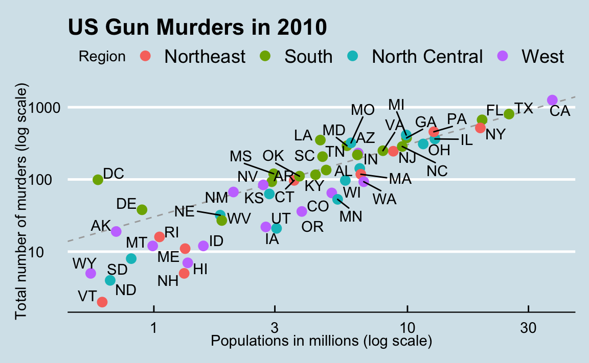
Figure 1: US Gun Murders in 2010
2 GRAPHICS PACKAGES IN R
2.1 Installation
In this chapter, we first return to the data used in the chapter on
"Basic plotting with R", and create some simple examples using the
ggplot2 package. Then we move on to a real data frame.
Note that there are yet more graphics packages in R, e.g. grid and
lattice (Kumar, 2020)
To begin, make sure that you have installed ggplot2:
R> install.packages("ggplot2")
R> library(ggplot2)
2.1.1 Problems students had in Windows 10
Installation of
dplyr> library(dplyr) Error: package or namespace load failed for 'dplyr' in loadNamespace(j <- i1L, c(lib.loc, .libPaths()), versionCheck = vIj): there is no package called 'purrr'
2.1.2 Problems students had in MacOS
Default locale problem - see screenshot from the introductory lesson (installation) in figure 2.
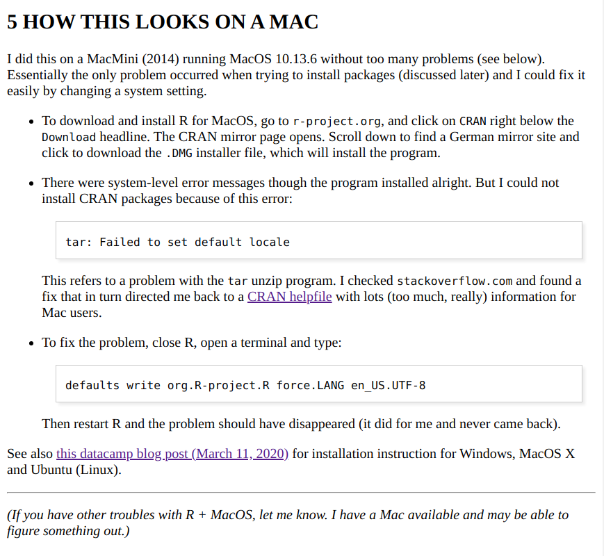
Figure 2: MacOS installation problem and solution
2.2 Beyond the Tidyverse
This lesson builds on Davies (2016) and Irizarry (2020). The book by
Irizarry is available online for free - the chapter on ggplot2
assumes knowledge of the Tidyverse package dplyr. This package
contains several useful functions to manipulate data frames. The way
these functions work will be familiar to those who know SQL:
filterto extract rows/observations from a data frameselectto extract columns/vectors from a data framemutateto add column vectors (variables) to a data frame
A better performing package for big data in tables is
data.table. You will especially like this package if you
already know SQL since it follows the same logic.
2.3 Tidyness
A condition for using both ggplot2 and dplyr functions is that
the data are "tidy", which in short means that they are perfectly
tabular (like data in relational databases) - see Wickham (2014)
for details, and figure 3 for an illustration:
- Each variable is a column
- Each observation is a row
Each type of observational unit is a table
Tidy data are nice if you have someone to tidy the data for you, or if they are already in that format. Then you can focus on analysis instead of data cleaning. However, there is likely to be less room for new discoveries.
In the Tidyverse, tidy data output is formatted as so-called "tibbles", which are rather hard to read. To me, the Tidyverse seems rather suited to the intermediate to professional R programmer - not the (casual) user or first-time learner of R2.
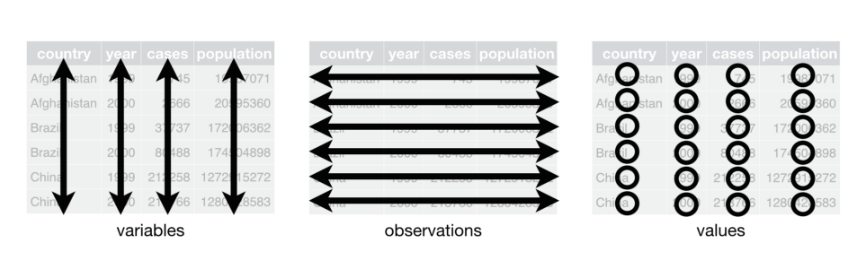
Figure 3: Tidy data (table). Source: R for Data Science (Wickham/Grolemund 2016)
2.4 What are messy data?
But how would "non-tidy" (aka messy) data look like? Wickham (2014) gives several indications for messy data:
- Column headers are values, not variable names.
- Multiple variables are stored in one column.
- Variables are stored in both rows and columns.
- Multiple types of observational units are stored in the same table.
- A single observational unit is stored in multiple tables.
Real data, especially big data, are usually messy, and not tidy. You may not know this because for training purposes, mostly tidy tabular data are used.
3 QUICK PLOTS
3.1 Print coordinate vectors
## load ggplot2 package library(ggplot2) ## define coordinate vectors foo <- c(1.1,2,3.5,3.9,4.2) bar <- c(2,2.2,-1.3,0,0.2) ## quick plot foo,bar qplot(foo,bar)
See figure 4 for the output of this code. Notice the visual
changes to the generic plotting function plot(foo,bar). But the
syntax is the same: two vectors of equal length are passed to the
function and evaluated as two coordinate vectors.
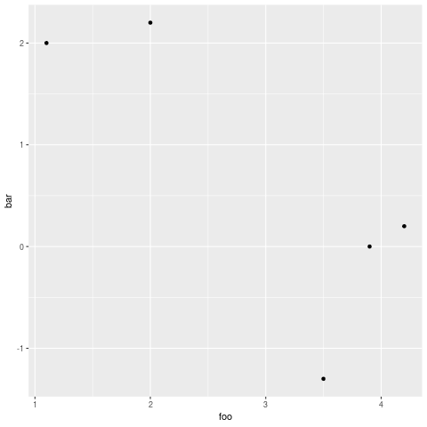
3.2 Define plot labels
Label definition works in the same way:
## load ggplot2 package
library("ggplot2")
## define coordinate vectors
foo <- c(1.1,2,3.5,3.9,4.2)
bar <- c(2,2.2,-1.3,0,0.2)
## quick plot foo,bar with labels
qplot(foo,bar,
main="My lovely plot",
xlab="x axis label",
ylab="location y")
See figure 5 for the output of this code.
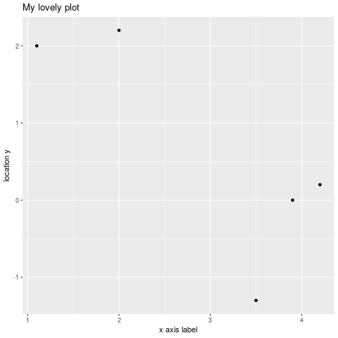
3.3 Difference to plot
Instead of a step by step process, which is what plot does,
ggplot2 creates graphics in a different way: the plots are stored
as objects and remain static until you change the object. qplot
visualizes the printed object at any given time.
To show this, store plot(foo,bar) and qplot(foo,bar) in two
vectors baz and qux and print them:
## load ggplot2 package
library("ggplot2")
## define coordinate vectors
foo <- c(1.1,2,3.5,3.9,4.2)
bar <- c(2,2.2,-1.3,0,0.2)
## store and print plot
baz <- plot(foo,bar)
baz
## store and print qplot
qux <- qplot(foo,bar)
qux
baz is NULL because nothing is stored in the workspace. qux
on the other hand contains the qplot object. To be able to save
the plot this way before you display it offers new ways of
modifying and enhancing plots creating a distinct advantage over
base R graphics.
4 COMPONENTS OF A GRAPH
We will construct the graph already shown earlier, in figure 1. First, we break the graph apart in components:
- Data: the US
murdersdata frame is summarized - Geometry: the plot is a scatterplot. Other possibilities: barplot, histogram, smooth density plots, boxplots.
- Aesthetic mapping: visual clues, like mapping of observations to x- and y-axis, color, data labels, region legend, overall style (here borrowed from the magazine The Economist3).
5 OBJECTS AND PIPING
We define a ggplot object using the murders data. You should get
an overview of the data using str(murders) et an overview of the
data using str(murders) and head(murders).
## load package and data frame library(ggplot2) library(dslabs) data(murders) ## define object associated with the data p <- ggplot(data = murders) class(p) ## render plot by printing the object print(p)
An alternative is to pipe the data in as the first argument using
the dplyr operator %>%4:
## load package and data frame library(dplyr) library(ggplot2) library(dslabs) data(murders) ## pipe the data in as the first argument murders %>% ggplot()
The output is the same in both cases (see figure 6): since no geometry was defined, the output is a blank slate with a pure grey style background.
Figure 6: ggplot() without geometry
6 GEOMETRIES
ggplot2 graphs are created using layers with the + symbol. The
schematic looks like this:
ggplot(data=DATA) + LAYER 1 + LAYER 2 + ... + LAYER N
Usually, the first layer defines the geometry - for scatterplot,
that's geom_point5
Challenge: check out the help file for
geom_point. Which aesthetic mappings are possible, which are necessary?
7 AESTHETIC MAPPINGS
The aes function is used as the argument of a geometry function:
note that you can call the vectors murder$population and
murder$total without the accessor $6:
library(dslabs)
library(ggplot2)
data(murders)
## plot total murders vs population
ggplot(data=murders) +
geom_point(
aes(x = population/10^6,
y = total))
For the output, see figure 7.
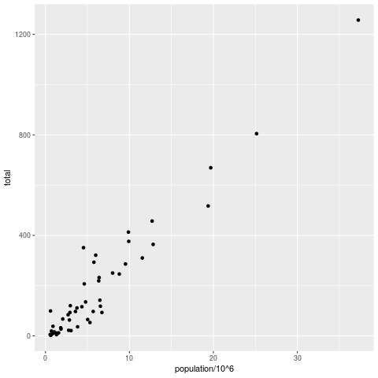
Figure 7: aesthetic mapping with x and y values only
8 LAYERS
We add labels to identify each point with its US state
(murders$abb) using the geom_text geometry. To emphasize the
layer concept, we stick to the object notation (instead of the
piping), see figure 8 for the output:
library(dslabs)
library(ggplot2)
data(murders)
## define ggplot object, x and y vectors
p <- ggplot(data = murders)
## add text label layer to the scatterplot and render
p + geom_point(
aes(x = population/10^6,
y = total)) +
geom_text(aes(x = population/10^6,
y = total,
label=abb))
Challenge: try calling
label=abboutside of theaesfunction!
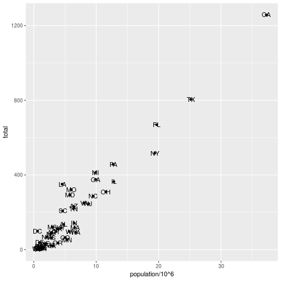
Figure 8: Labeling aesthetic mappings using label=abb inside aes
9 SIZE IS NOT A MAPPING
We can change aesthetics like the size of the points using the
size argument inside the geometry. size is not a mapping,
because it does not use data from observations!
library(dslabs)
library(ggplot2)
data(murders)
## define ggplot object, x and y vectors
p <- ggplot(data = murders)
## add text label layer to the scatterplot and render
p + geom_point(
aes(x = population/10^6,
y = total),
size = 3) +
geom_text(
aes(x = population/10^6,
y = total,
label=abb))
This leads to a resizing of the points as shown in figure 9.
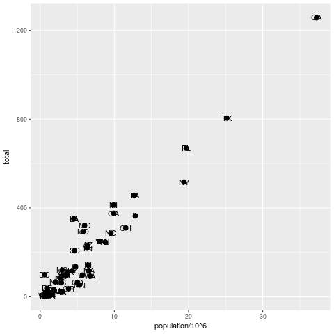
Figure 9: Resizing points using size inside geom_point
10 NUDGING IS NOT A MAPPING EITHER
library(dslabs)
library(ggplot2)
data(murders)
## define ggplot object, x and y vectors
p <- ggplot(data = murders)
## add text label layer to the scatterplot and render
p + geom_point(
aes(x = population/10^6,
y = total),
size = 3) +
geom_text(
aes(x = population/10^6,
y = total,
label=abb),
nudge_x = 1.5)
This leads to a nudging of the labels as shown in figure 10.

Figure 10: Nudging the labels using nudge_x inside geom_text
11 GLOBAL AESTHETIC MAPPING
We want to avoid having to define aes for each geometry. To do
this, we need to let R know that added layers will default to our
mapping. We redefine our plot object p. By defining a mapping
inside ggplot, it now applies globally. We then test this right
away with our size and nudge_x parameters (see figure
11):
library(dslabs) library(ggplot2) data(murders) ## define ggplot object and aesthetic mapping p <- ggplot(data=murders, aes(population/10^6, total, label=abb)) ## add text label layer to the scatterplot and render p + geom_point(size = 3) + geom_text(nudge_x = 1.5)

Figure 11: Our plot after applying a global aesthetic mapping
12 LOCAL OVERRIDE
Local definitions override global definitions! Figure 12
shows an example: the second call to geom_text does not use the
murders data.
library(dslabs) library(ggplot2) data(murders) ## define ggplot object and aesthetic mapping p <- ggplot(data=murders, aes(population/10^6, total, label=abb)) ## add text label layer to the scatterplot and render p + geom_point(size = 3) + geom_text(x = 10, y = 800, label = "Hello there!")
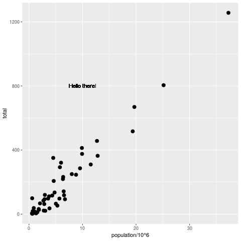
Figure 12: Overriding global aesthetic mapping with a local definition
13 LOG SCALE I
Log-scales are not the default. We add them with the
scale_x_continuous function (see figure 12):
library(dslabs) library(ggplot2) data(murders) ## define ggplot object and aesthetic mapping p <- ggplot(data=murders, aes(population/10^6, total, label=abb)) ## add text label layer to the scatterplot and render ## transform x and y vectors to log10 values p + geom_point(size = 3) + geom_text(nudge_x = 0.05) + scale_x_continuous(trans = "log10") + scale_y_continuous(trans = "log10")
We reduce the nudge_x factor to accomodate the log-scale.

Figure 13: Transforming x and y axes to log10 scales
14 LOG SCALE II
Logarithmic transformations are so common that there is a specialized function for it:
library(dslabs) library(ggplot2) data(murders) ## define ggplot object and aesthetic mapping p <- ggplot(data=murders, aes(population/10^6, total, label=abb)) ## add text label layer to the scatterplot and render ## transform x and y vectors to log10 values p + geom_point(size = 3) + geom_text(nudge_x = 0.05) + scale_x_log10() + scale_y_log10()
The output is the same as before, see figure 14.
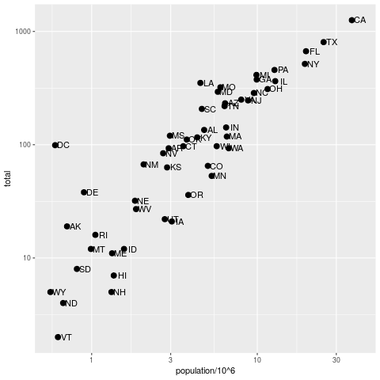
Figure 14: Transforming axes to log10 scales using scale_x_log10
15 LABELS AND TITLES
The functions to change labels and add a title are shown in the next code chunk - the the output in 15:
library(dslabs)
library(ggplot2)
data(murders)
## define ggplot object and aesthetic mapping
p <- ggplot(data=murders,
aes(population/10^6,
total,
label=abb))
## add text label layer to the scatterplot and render
## transform x and y vectors to log10 values
## add title and axis labels
p + geom_point(size = 3) +
geom_text(nudge_x = 0.05) +
scale_x_log10() +
scale_y_log10() +
xlab("Population in millions (log scale)") +
ylab("US Gun Murders in 2010") +
ggtitle("US Gun Murders in 2010")
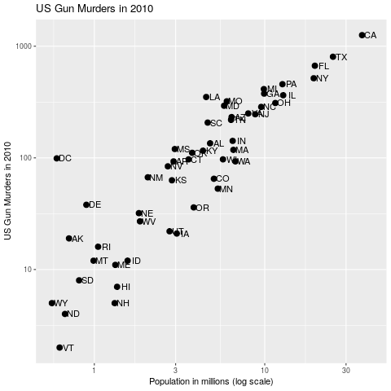
Figure 15: Adding labels and a title
16 COLOR I
The geom_point function has a color argument. If we add it
alongside size, all points will appear in that color (figure
16). To demonstrate this, we redefine p by taking out the
geom_point layer.
library(dslabs)
library(ggplot2)
data(murders)
## define ggplot object and aesthetic mapping
p <- ggplot(data=murders,
aes(population/10^6,
total,
label=abb)) +
geom_text(nudge_x = 0.05) +
scale_x_log10() +
scale_y_log10() +
xlab("Population in millions (log scale)") +
ylab("US Gun Murders in 2010") +
ggtitle("US Gun Murders in 2010")
## changing color for all points
p + geom_point(size = 3, color ="blue")
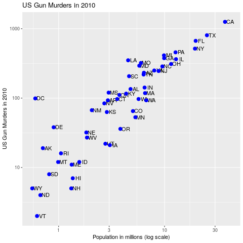
Figure 16: Adding color (all points)
17 COLOR II
This is not what we want. Instead, we use aes inside geom_point
to define an aesthetic mapping (since the color corresponds to data)
using the factor murders$region so that we get add a third
dimenstion to the plot - see figure 17.
library(dslabs)
library(ggplot2)
data(murders)
## define ggplot object and aesthetic mapping
p <- ggplot(data=murders,
aes(population/10^6,
total,
label=abb)) +
geom_text(nudge_x = 0.05) +
scale_x_log10() +
scale_y_log10() +
xlab("Population in millions (log scale)") +
ylab("US Gun Murders in 2010") +
ggtitle("US Gun Murders in 2010")
## changing color for all points
p + geom_point(aes(col = region),
size = 3)
The coordinate point mappings are inherited. aes is expected to be
the first argument of geom_point. The legend showing the mapping
of color to region is added automatically7.
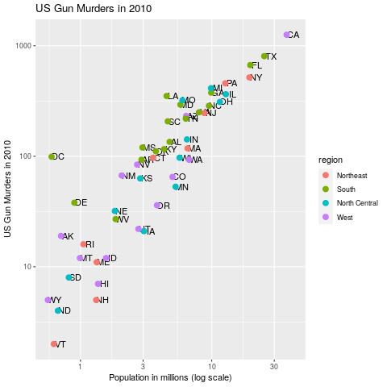
Figure 17: Adding color as aesthetic mapping using murders$region
18 MORE
There is a lot more you can do here. E.g. to add a line like with
the Base-R function abline, you can add a layer
geom_abline(). To compute the intercept and slope, we use the
dplyr functions summarize and pull - the line in the final
plot represents the average murder rate for the whole country.
To make changes to the legend, you can use the
scale_color_discrete geometry.
For a "quick" overview (never quick, because there are so many
functions in the package), you can check the ggplot2 cheat sheet
from RStudio.
You can change the overall theme with the package ggthemes,
e.g. to change the style to The Economist magazine style:
library(ggthemes) p + theme_economist()
An alternative geometry to nudging the labels is geom_text_repel,
part of the ggrepel package.
In the next section, we use all of these to make the final plot.
19 PUTTING IT ALL TOGETHER8
## load data libraries
library(dslabs)
data(murders)
## load plotting libraries
library(ggplot2) # improved plotting
library(ggthemes) # improved plot theme
library(ggrepel) # improved text labels
ggplot(data=murders,
aes(population/10^6,
total,
label = abb)) +
geom_point(aes(col=region),
size = 3) +
geom_text_repel() +
scale_x_log10() +
scale_y_log10() +
xlab("Population in millions (log scale)") +
ylab("Total number of murders (log scale)") +
ggtitle("US Gun Murders in 2010") +
scale_color_discrete(name = "Region") +
theme_economist()
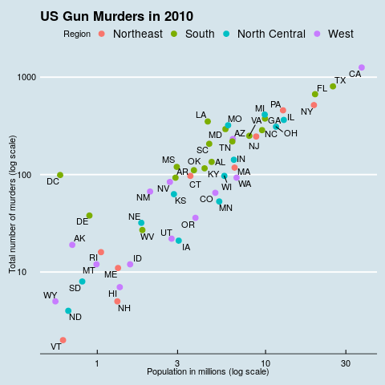
Figure 18: The final plot!
20 CHALLENGES
- The first few aesthetic mappings that
geom_pointunderstands, arex,y, andcolor, withx,yas the minimum. Calling
label=abboutside of theaesfunction leads to an error:abbis not recognized outside ofaes- you have to index it asmurders$abb, then it would work:library(dslabs) library(ggplot2) data(murders) ## define ggplot object, x and y vectors p <- ggplot(data = murders) ## add text label layer to the scatterplot and render p + geom_point(aes(x = population/10^6, y = total)) + geom_text(aes(x = population/10^6, y = total), label=murders$abb)
This code leads to the output shown in figure 19, which is identical to figure 8.

Figure 19: Labeling aesthetic mappings using label=murders$abb outside of aes
21 REFERENCES
- Davies (2016). Book of R chapter 7. NoStarch Press.
- Grolemund/Wickham (2016). R for Data Science. O'Reilly. Online: had.co.nz
- Irizarry (2020). Introduction to Data Science Chapter 7: ggplot2. CRC Press. Online: rafalab.github.io
- Kumar (2020). Grid and Lattice Packages in R Programming. Online: geeksforgeeks.org
- Matloff (2020). TidyverseSkeptic. Online: github.com
- Wickham (2014). Tidy data. Journal of Statistical
Software 59(10). Online: had.co.nz (preprint),
tidyrvignette
22 SUMMARY
- Real data are mostly not "tidy" but "messy"
- Components of a graph: data + aesthetic mapping + geometry
- Geometries: the type of plot (scatterplot, barplot etc.)
- Graphs are created by adding layers to a
ggplot()object - Arguments like size etc. are not part of the
aesmapping - There are many add-on packages to refine plots
23 CODE
install.packages("ggplot2") |
install ggplot2 package |
library(ggplot2) |
load ggplot2 package into R session |
qplot(foo,bar) |
quick scatterplot of foo vs. bar |
dslabs |
Package for Irizarry's DS course and book |
dplyr |
Tidyverse package to manipulate data frames |
data.table |
Package to manipulate Big Tables |
geom_point() |
Scatterplot geometry |
ggplot() |
Geometry of Graphics plot object |
aes(x,y,color,label) |
Aesthetic mapping function |
data %>% |
Pipe data as argument into a function |
geom_text() |
Add text labels |
scale_x_log10 |
Log transform the x axis |
geom_abline() |
Adds a line |
scale_color_discrete() |
Change legend details |
theme_economics() |
The Economics theme from ggthemes |
geom_text_repel() |
Alternative text label repelling geometry |
Footnotes:
The main source for this lecture is Rafael Irizarry's introductory data science course and book (Irizarry, 2019). As a sad pandemic update on the 2010 US gun murder figures used here: "Murder rates jumped more than 30 percent fall-over-fall and more than 40 percent summer-over-summer from 2019 to 2020." (Source: Quillette).
I don't really know why but the whole "tidy" use of language ticks me off - though I don't particularly like things messy. Norman Matloff has a few interesting points to make on that in his essay "TidyverseSceptic - an alternative view of the Tidyverse 'dialect# of the R language, and its promotion by RStudio" (Matloff, 2020).
See "Creating a plot like the Economist in R" for a detailed
discussion of recreating this style using R's ggplot2 and
ggthemes.
Requires installation of dplyr and/or the Tidyverse through
install.packages("tidyverse"). This will take a while.
The usual syntax is geom_X where X denotes the geometry,
e.g. geom_point, geom_bar, geom_histogram etc.
This is specific to aes, for most functions, this trick will
not work. So you should not forget indexing operators!
To switch it off, you can add the argument show.legend=FALSE
to geom_point.
The only aspect of the original plot that we ignore here is the
faint dashed line that represents the averate murder rate across the
US. If you're interested in seeing how this came about using the
dplyr package, which I have ignored here, check Irizarry (2020),
ch. 7.12 .